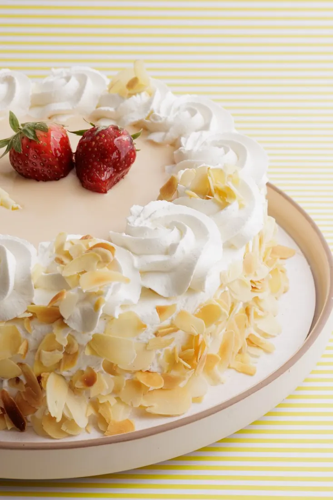

· Maron Blog
Δημήτρης και Δήμητρα: το γλυκό της πιο μεγάλης γιορτής του φθινοπώρου

Υπάρχουν γιορτές που τις θυμάσαι από το ημερολόγιο και γιορτές που τις θυμάσαι από τα τηλέφωνα. Η 26η Οκτωβρίου ανήκει στις δεύτερες. Του Αγίου Δημητρίου γιορτάζουν ο Δημήτρης και η Δήμητρα, μαζί με κάθε Μήτσο, Τάκη, Μίμη και Δήμη. Είναι από τα πιο αγαπημένα ονόματα στην Ελλάδα, και έτσι σχεδόν όλοι έχουμε κάποιον να ευχηθούμε. Και κάπου ανάμεσα στο «χρόνια πολλά» και στο «πότε περνάμε;» γεννιέται πάντα η ίδια ερώτηση: τι γλυκό να πάρουμε;
Ένα έθιμο που μυρίζει βανίλια
Ο Άγιος Δημήτριος ο Μυροβλύτης είναι πολιούχος της Θεσσαλονίκης και η γιορτή του πέφτει στην καρδιά του φθινοπώρου, συχνά μέσα σε εκείνες τις ζεστές, χρυσές μέρες που ο λαός ονόμασε «το καλοκαιράκι του Αγίου Δημητρίου». Η ονομαστική εορτή, πάλι, είναι μια πολύ ελληνική υπόθεση. Ο εορτάζων δεν περιμένει δώρα, κερνάει. Ανοίγει το σπίτι, φέρνει γλυκά στο γραφείο, στρώνει τραπέζι. Και όποιος πάει επίσκεψη, σπάνια πάει με άδεια χέρια. Το κουτί από το ζαχαροπλαστείο, δεμένο με κορδέλα, είναι εδώ και δεκαετίες ο πιο κομψός τρόπος να πεις «σε σκέφτηκα».
Στο σπίτι: η τούρτα που φέρνει το τραπέζι κοντά
Όταν η γιορτή γίνεται στο σπίτι, με οικογένεια και φίλους γύρω από ένα τραπέζι, η τούρτα είναι το κέντρο της βραδιάς. Δεν χρειάζεται να είναι η πιο εντυπωσιακή. Χρειάζεται να είναι εκείνη που ταιριάζει σε όσους θα τη μοιραστούν.
- Για τους λάτρεις της σοκολάτας, μια πλούσια σοκολατένια τούρτα με γυαλιστερό γλάσο δεν αποτυγχάνει ποτέ.
- Για ένα τραπέζι με πολλές ηλικίες, οι πιο ανάλαφρες τούρτες με κρέμα και φρούτα είναι η ασφαλής, φωτεινή επιλογή.
- Για όσους αγαπούν τις κλασικές γεύσεις, οι τούρτες που θυμίζουν παιδικά χρόνια έχουν πάντα κάτι συγκινητικό.
- Αν θέλετε κάτι προσωπικό, μια τούρτα με το όνομα του εορτάζοντα ή μια διακόσμηση που του μοιάζει κάνει τη διαφορά.
Μια μικρή συμβουλή: παραγγείλτε νωρίς. Η 26η Οκτωβρίου είναι από τις πιο γεμάτες μέρες του φθινοπώρου για κάθε ζαχαροπλαστείο, και μια τούρτα που φτιάχνεται για εσάς θέλει τον χρόνο της.
Στο γραφείο: το κέρασμα που δεν θέλει μαχαίρι
Στο γραφείο οι κανόνες αλλάζουν. Εκεί κερδίζει ό,τι τρώγεται εύκολα, όρθιο, ανάμεσα σε δύο τηλεφωνήματα. Οι πάστες σε ατομικές μερίδες, τα μικρά γλυκά και τα κεράσματα σε κουτί λύνουν το πρόβλημα με τον πιο κομψό τρόπο: ο καθένας διαλέγει τη γεύση του και κανείς δεν ψάχνει πιατάκια και μαχαίρια. Ένα μείγμα από σοκολατένιες, φρουτένιες και πιο κλασικές πάστες καλύπτει όλα τα γούστα της ομάδας. Αν η παρέα είναι μεγάλη, τα μπισκότα και τα μικρά γλυκά ταψιού είναι ιδανικά για να συνοδεύσουν τον απογευματινό καφέ.
Στην επίσκεψη: το κουτί που λέει «σε σκέφτηκα»
Αν είστε εσείς ο καλεσμένος, το γλυκό που θα φέρετε είναι το δικό σας «χρόνια πολλά». Εδώ μετράει λίγο περισσότερο η λεπτομέρεια. Μια μικρή επιλογή από πάστες ή ένα κουτί με γλυκά που δεν βρίσκει κανείς παντού δείχνει ότι διαλέξατε, όχι ότι απλώς αγοράσατε. Και αν ξέρετε τι αγαπά ο εορτάζων, πηγαίνετε με σιγουριά προς τα εκεί. Οι Δημήτρηδες με αδυναμία στη σοκολάτα δεν θα παραπονεθούν ποτέ για ένα ακόμη σοκολατένιο γλυκό.
Τρία μικρά μυστικά για ένα γλυκό που ταξιδεύει σωστά
- Μεταφέρετε τις τούρτες και τις πάστες οριζόντια, σε δροσερό σημείο του αυτοκινήτου, και όχι στο πορτμπαγκάζ κάτω από τον ήλιο του φθινοπώρου.
- Τα γλυκά με κρέμα θέλουν ψυγείο μέχρι να σερβιριστούν, αλλά βγαίνουν λίγα λεπτά νωρίτερα για να ανοίξουν οι γεύσεις τους.
- Για το κόψιμο, ένα μαχαίρι βουτηγμένο σε ζεστό νερό και σκουπισμένο ανάμεσα σε κάθε κομμάτι δίνει καθαρές, όμορφες φέτες.
Για τους μικρούς Δημήτρηδες
Όταν ο εορτάζων είναι παιδί, η γιορτή αλλάζει χαρακτήρα. Τα παιδιά δεν γιορτάζουν απλώς το όνομά τους, το ζουν σαν δεύτερα γενέθλια. Εδώ η τούρτα γίνεται παιχνίδι: ο αγαπημένος ήρωας, ένα χρώμα που λατρεύουν, μια εικόνα τυπωμένη πάνω στην επιφάνεια. Για το σχολείο ή για το πάρτι με τους φίλους, τα μικρά γλυκά και τα κεράσματα σε ατομική μερίδα είναι πρακτικά και αρέσουν σε όλους. Και αν η γιορτή του παιδιού πέφτει σε καθημερινή, ένα μικρό γλυκό το απόγευμα μετά το σχολείο αρκεί για να νιώσει ότι η μέρα είναι δική του.
Ένα μικρό σημείωμα για τους μεγάλους: όταν το πάρτι έχει πολλά παιδιά, ρωτήστε από πριν για αλλεργίες. Ένα μήνυμα στους γονείς γλιτώνει πολλές ανησυχίες και κρατά τη γιορτή ξέγνοιαστη.
Γιατί το γλυκό είναι πάντα η σωστή ευχή
Στο τέλος της μέρας, κανείς δεν θυμάται ακριβώς τι του είπαν στο τηλέφωνο. Θυμάται όμως το τραπέζι, τη μυρωδιά του καφέ, το κομμάτι τούρτας που μοιράστηκε με ανθρώπους που αγαπά. Αυτό ακριβώς κάνει το γλυκό να είναι η πιο διαχρονική ευχή: δεν λέει απλώς «χρόνια πολλά», τα γιορτάζει μαζί σου.
Αυτόν τον Οκτώβριο, περάστε από το Maron στο Ίλιον (Αγίου Νικολάου 123) ή στο Αιγάλεω (Ιερά Οδός 287) να διαλέξετε το γλυκό της γιορτής από τη βιτρίνα μας, ή στείλτε μας μήνυμα στο Instagram @maron_greece για να σχεδιάσουμε μαζί την τούρτα σας εγκαίρως. Χρόνια πολλά σε όλους τους Δημήτρηδες και τις Δήμητρες.